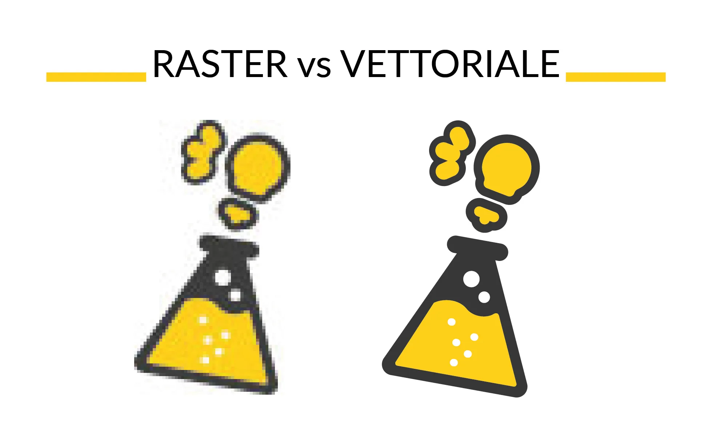

|  |
In generale, i formati raster sono utilizzati per immagini fotografiche e immagini con sfumature di colore, mentre i formati vettoriali sono utilizzati per illustrazioni, loghi e diagrammi. Le immagini raster sono adatte per la stampa di fotografie su carta e per l'uso su siti web e dispositivi digitali, mentre le immagini vettoriali sono adatte per la creazione di loghi, illustrazioni e grafiche che devono essere ingrandite o ridotte senza perdere qualità. |
| 1) JPEG (Joint Photographic Experts Group): un formato molto diffuso per le immagini fotografiche, offre una buona compressione ma può causare perdita di qualità. |
| 2) PNG (Portable Network Graphics): un formato aperto che supporta la trasparenza e la compressione senza perdita di qualità. |
| 3) GIF (Graphics Interchange Format): un formato che supporta l'animazione e la trasparenza a 256 colori. |
| 4) TIFF (Tagged Image File Format): un formato utilizzato principalmente per la stampa e la conservazione di immagini a elevata risoluzione, supporta compressioni con e senza perdita di qualità. |
| 5) BMP (Bitmap): un formato molto semplice che supporta solo immagini a colori a 24 bit. |
| 6) RAW: un formato utilizzato dalle fotocamere digitali per salvare immagini non elaborate, che fornisce maggiore flessibilità per la modifica successiva. |
| - Gli elementi vettoriali possono essere ingranditi o ridotti senza perdere qualità. | - Non è adatto per la modifica di immagini fotografiche. |
| - Offre una maggiore flessibilità nella creazione di forme complesse. | - Può essere più complesso da utilizzare rispetto a programmi di elaborazione grafica raster. |
| - Consente di creare file più leggeri rispetto a quelli raster. | - Non supporta la creazione di effetti di profondità e sfumature come un programma di elaborazione grafica raster. |
| - Ideale per la creazione di loghi e illustrazioni. | - Non è adatto per la creazione di immagini con effetti di trama o texture. |